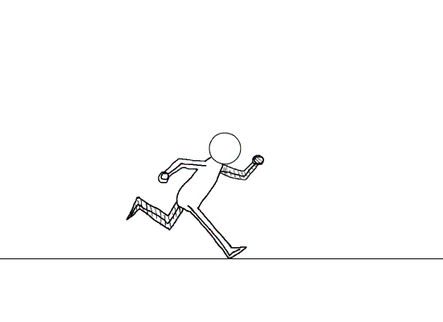

Sistemas Energeticos
La actividad física, de cualquier tipo, está condicionada a la cantidad de energía del organismo. Esto es, para poder realizar cualquier esfuerzo físico: actividad aeróbica o anaeróbica, es imprescindible que el organismo libere energía para realizar ese trabajo.
Tipos de Sistemas Energeticos

- Sistema de fosfagenos o imendiato:Este sistema se denomina también sistema anaeróbico aláctico. La obtención de energía depende de las reservas de ATP y fosfocreatinas presentes en el músculo. Es la fórmula más rápida de obtención de energía y es la que se utiliza para movimientos explosivos en los que no hay tiempo para convertir otros combustibles en ATP.
- La glucólisis anaeróbica:La glucólisis anaeróbica es la vía que sustituye al sistema de los fosfágenos. Es la fuente energética principal en esfuerzos deportivos de alta intensidad que siguen siendo cortos en duración pero van más allá de unos pocos segundos. Este sistema energético aparece cuando las reservas de ATP y fosfocreatina se agotan y el músculo debe volver a sintetizar ATP a partir de la glucosa en un proceso denominado glucolisis.
- El sistema aeróbico u oxidativo:Tras ATP, fosfocreatina y glucosa que se obtiene en primer término del glucógeno, el organismo ha de echar mano del sistema oxidativo, es decir, los músculos utilizan como combustibles el oxígeno presente en hidratos de carbono y grasas. Si se agotan las reservas de hidratos de carbono y grasas, las proteínas también ofrecen energía, pero en menor grado.